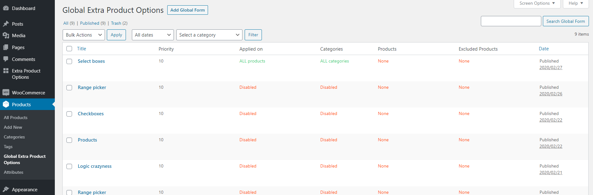
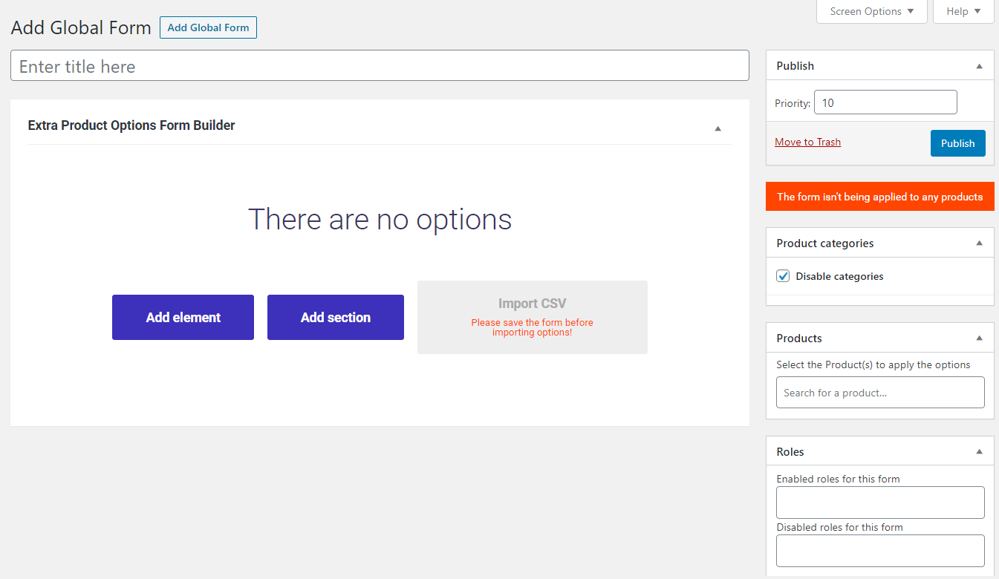
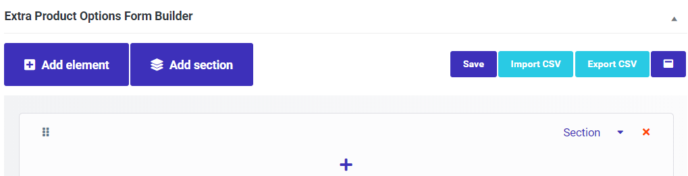
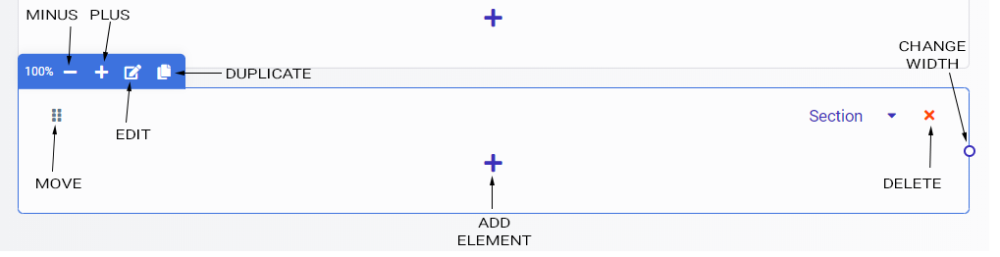
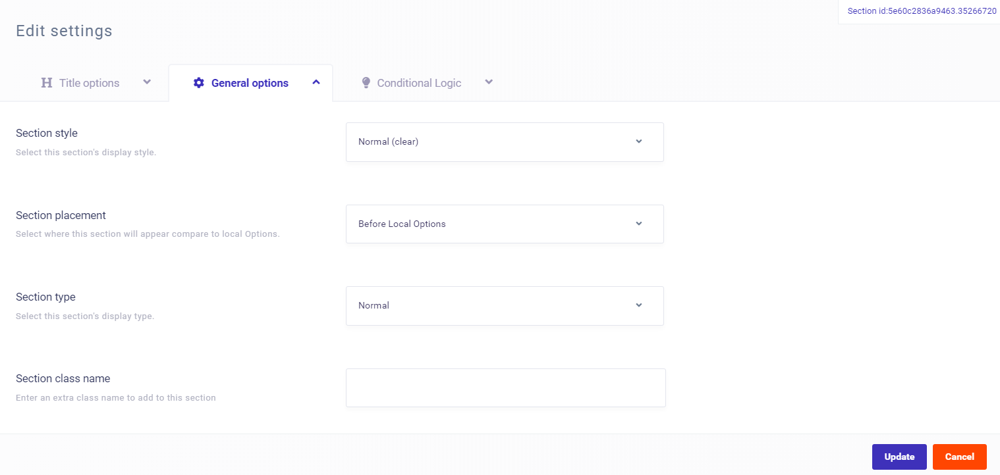
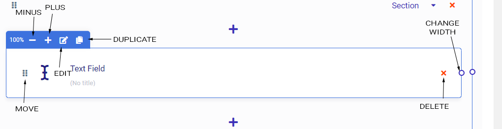
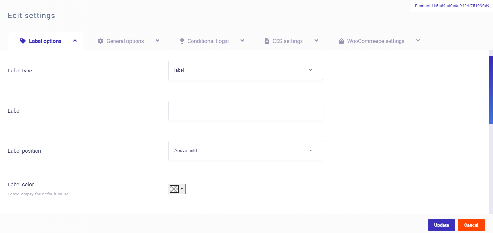
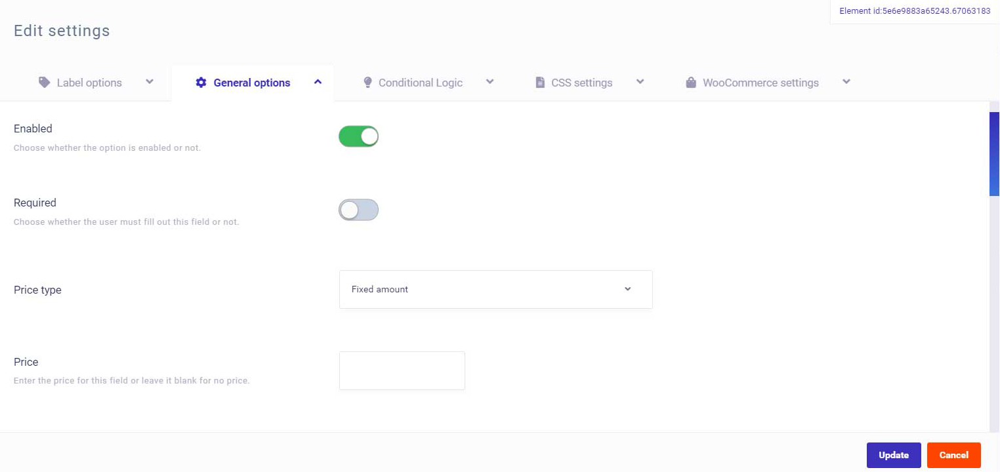
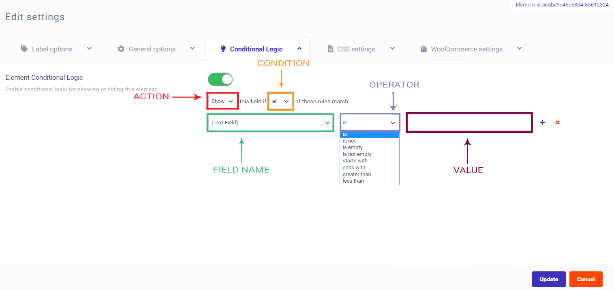

WooCommerce Extra Product Options
Create extra options on your products!
Thank you for purchasing our plugin. If you have any questions that are beyond the scope of this help file, please visit the support forum here. Thanks so much!
Extra Product Options allows you to create extra fields on your WooCommerce products locally on the edit product page or globally. The current version supports checkboxes, radio buttons, select boxes, textareas, input boxes, upload, date, range picker and color picker. The options you create show up above the add to cart form.
http://fontawesome.io License - https://fontawesome.com/license/free (Icons: CC BY 4.0, Fonts: SIL OFL 1.1, Code: MIT License)
Author: Brian Grinstead. (https://github.com/bgrins/spectrum/) Licensed under the MIT license
(http://refreshless.com/nouislider/) License: http://www.wtfpl.net/about/
Lazy Load XT is licensed under the MIT license
(Created by Igor Escobar https://github.com/igorescobar/jQuery-Mask-Plugin) Licensed under the MIT license
Copyright (c) 2014 JΓΆrn Zaefferer http://jqueryvalidation.org/ Licensed under the MIT license
Copyright 2013-2018 David Deutsch http://owlcarousel2.github.io/OwlCarousel2/ Licensed under SEE LICENSE
Copyright 2014 The jQuery Foundation. jQuery License
There are two primary methods for installing any WordPress plugin.
Plugins > Add New
Upload from the set of links at the top of the page (the second link)
Install Now button
Activate Plugin to activate it and enable its features.
If you are have no previous web experience and have no idea what an FTP Manager is, then this option is not for you.
/(WordPress directory)/wp-content/plugins/
If WordPress is installed on the root folder the directory is /wp-content/plugins/
Plugins > Installed PluginsActivate link to enable its features.Adding extra options to your products is really easy. Below we describe the required steps for creating your fields.
The basic usage of the plugin assigns option fields to a specific product.
Add or edit a WooCommerce product.
Make sure your product type is either Simple, Variable, Composite, Bookable or Subscription product.
Locate the sub-section Extra Product Options in the product data panel and click it. You should now be presented with the plugin interface. If you haven't created extra options before for that product you will see the Builder mode.
Note that the Normal mode previously used in the plugin is depreacated and unsupported. It will eventually be removed from the plugin.
This is the preferable way of creating options.
On this mode you are presented with with Form Builder that you will use to create your options. Click the Add section button to create a section where the options must placed in. Click the Add element button (cross button) located on the section to select the option field type.
For better understanding of the Form Builder see the section Form Fields Builder.
This method uses the Form Builder to create options that can be set to all of the products, products that belong to specific categories or alternatively to specific products.
From the WordPress dashboard choose Products > Global Extra Product Options.
Click the Add Global Form button at the top of the screen.
Add title and description for your reference only, so that you can distinguish the different forms.
Select the Product Categories that you want your form to be applied on. Choose no categories to apply the form to all products (even to products that don't belong to any category). Clicking the Disable categories checkbox will make the plugin disregard selected categories. You can assign specific products to the form by selecting them on the Products meta box.
Add your fields on the Form Fields Builder.
For information on the form settings see the section Global Extra Product Options. For help creating a field on the Form Fields Builder see the section Form Fields Builder
Clicking the settings tab while on the product panel you can override some global settings.
Include additional Global formsThis list contains all of the global forms and checking one will include it on the global. The forms you choose will be displayed alongside with the forms that the product already has. This setting will also override the next one.
Exclude from Global Extra Product OptionsThis will exclude any global forms assigned to this product except those defined in the previous setting.
Override global displayThis overrides the global display setting for the display of the fields on the front-end for the current product only. The default value is Use global setting which uses whatever you have chosen on the global settings (see below). Always show will always show the fields assigned to the current product and Show only with action hook will only show the fields for the current product by using action hooks (see below).
This will override the global totals box display for this product. The default value is Use global setting which uses whatever you have chosen on the global settings (see below).
This will override which roles can see the options for this product.
Override disabled roles for this productThis will override which roles cannot see the options for this product. This setting has priority over the enabled roles one.
Global Extra Product Options are applied to all products, products belonging to a specific category or categories or specific products. To gain access to Global Extra Product Options interface from the WordPress dashboard choose Products > Global Extra Product Options.
Any existing Global Extra Product Options created are displayed in the familiar WordPress table view.

To add a new Global Product Options form click the Add Global Form button. This will bring you to the add screen.

Title and DescriptionThese are for your reference only and are not currently being used anywhere in the front-end.
PriorityThis is used to determine in which order multiple forms that apply to a specific product are being displayed in the front-end.
Please note that, the "Priority" is not used to determine if your form will show up before or after the local (per-product) prices. This is done in the form editor.
They are used to limit the display of your current global product option form on the products that belong to the selected categories. Selecting no categories means that the form will be applied to ALL products.
Disable CategoriesChecking this will disable the categories.
Search for a productThis where you type the individual products to assign the product to.
The Form Fields Builder is where you actually create your options. It operates as a regular form builder. The concept behind the builder is that you create sections and inside the sections you put the fields.


MOVEClick and drag to re-order the section.
MINUSDecreases the size of the section.
PLUSIncreases the size of the section.
DUPLICATEDuplicates the section (including all its fields).
EDITShows this section's settings
DELETEDeletes the section and all its fields.
CHANGE WIDTHDrag to change the section width.
ADD ELEMENTClick to add a new element to that section.
Click the Add section button. This will add a new section to the form.
To gain access to the section settings click the edit button at the section's toolbar. Doing this will open a pop up where you can edit the settings for that section.

Section styleDetermines the style of that section on the front-end.
Section placementDetermines where this section will appear compare to local (per-product) options. You can place it before or after the local options.
If you have multiple sections, the priority of the section determines the display order either before or after local options.
Determines if the section will be a pop up (the section's title will be used as a the link title to open the pop up) or a wizard slider.
Section class nameThis will add a custom class name to the section. You can use this to style the section.

DRAG HANDLEClick and drag to re-order the field.
MINUSDecreases the size of the field.
PLUSIncreases the size of the field.
DUPLICATEDuplicates the field.
EDITShows this field's settings
DELETEDeletes the field.
Clicking the cross button will display a pop up of the available elements. If you have more than one sections and you want your element to appear on a specific section you can instead drag the item placeholder to the desired section.
To gain access to the field settings click the edit button at the field's toolbar. Doing this will open a pop up where you can edit the settings for that field.
Please remember that currently you cannot change a field's type after you have placed it inside a section.
Depending on the field you choose you can edit different settings.

Label typeHere you can choose the type of the field's title.
LabelHere you enter the title of the field.
Label colorThis changes the default color for the title.
SubtitleHere you can enter a subtitle for the field's title.
Subtitle Subtitle positionThis changes the displayed location of the subtitle.
Subtitle colorThis changes the color for the subtitle.
Divider typeHere you can choose to show a divider between the field title and the actual field.

RequiredChoose whether the user must fill out this field or not.
PriceHere you enter the price for the field.
Text before PriceText entered here will be displayed before the price. Leave the setting blank for no text.
Text after PriceText entered here will be displayed after the price. Leave the setting blank for no text.
Set to FeeThis makes the option to be a fee added to the cart line item.
Price typeHere you can choose how the price is calculated. Depending on the field there various types you can choose.
Fixed amountThis is an flat increase or decrease added to the product price.
Percent of the original priceThis is a percentage increase or decrease of the initial product price.
Percent of the original price + optionsThis is a percentage increase or decrease of the initial product price plus all of the other options that are not of this type.
Current valueThis will add a price the current value of the field.
Price per IntervalThis will multiply field's value by the Price you set and will deduct the minimum price. This price type is exclusive to the range picker element.
Step * price or QuantityThis will multiply field's value by the Price you set.
Price per rowThis will multiply the field's text rows by the Price you set. This price type is exclusive to the textarea element.
Price per charThis will multiply the field's number of characters by the Price you set.
This price type has several variations like Price per char (no spaces), Price per char (no first char), Price per char (no n-th char), Price per char (no n-th char and no spaces), Percent of the original price per char, Percent of the original price per char (no first char), Percent of the original price per char (no n-th char), Percent of the original price per char (no n-th char and no spaces)
Price per wordThis will multiply the field's number of words by the Price you set.
This price type has several variations like Price per word, Price per word (no n-th char), Percent of the original price per word, Percent of the original price per word (no n-th char)
Math formulaThis will set the price of the field based on a mathematical formula.
Hide priceChoose whether to hide the price on the front-end or not. This just hides the price. It doesn't disable it. If you want your field to not have a price leave the price field blank.
Enter a number above 0 to limit the checkbox selection or leave blank for default behavior.
Exact selectionEnter a number above 0 to have the user select the exact number of checkboxes or leave blank for default behavior.
Minimum selectionEnter a number above 0 to have the user select at least that number of checkboxes or leave blank for default behavior.
Use image replacementsThis lets you display images in place of the checkbox.
Changes product imageThis will let you change the product image with a custom one.
Enable Swatch modeThis will show the option label on a tooltip when Use image replacements is active.
Items per rowUse this setting to make a grid display. Enter how many items per row for the grid or leave blank for normal display.
Populate optionsHere you add the labels and their prices for the field choices.
Mass addTo mass add option use the following format:
Option 1 | 10 Option 2 | 20
and press the Populate button. Please note that this method only adds options, it doesn't replace existing ones.
This lets you display images in place of the radio button.
Changes product imageThis will let you change the product image with a custom one.
Enable Swatch modeThis will show the option label on a tooltip when Use image replacements is active.
Items per rowUse this setting to make a grid display. Enter how many items per row for the grid or leave blank for normal display.
Use URL replacementsThis will enable you to redirect to a url when a radio option is clicked.
Populate optionsHere you add the labels and their prices for the field choices.
Mass addTo mass add option use the following format:
Option 1 | 10 Option 2 | 20
and press the Populate button. Please note that this method only adds options, it doesn't replace existing ones.
This will let you change the product image with a custom one.
Use URL replacementsThis will enable you to redirect to a url when a radio option is clicked.
PlaceholderThis will add an option to the select box that will act as a placeholder. Use this to instruct the user to select something.
Populate optionsHere you add the labels and their prices for the field choices.
Mass addTo mass add option use the following format:
Option 1 | 10 Option 2 | 20
and press the Populate button. Please note that this method only adds options, it doesn't replace existing ones.
Here you may enter a placeholder for the field.
Maximum charactersEnter a value to limit the maximum characters the user can enter.
With Conditional Logic you can apply rules to your fields in order to control their display. Not all fields can be used as rules to the logic. Only fields that have a way of showing a value are valid. An example of a field that cannot be used as a logic rule is the upload field. All fields though can have logic applied on them.

ACTIONThis controls the display of the field if the conditions are met. You can either hide or show the field.
CONDITIONThis controls how the logic is applied. You can either select to have the applied when ALL rules are me or when ANY of the rules are met.
FIELD NAMEThis is the field that you want to check its value.
OPERATORThis determines how the field's value is evaluated.
VALUEThis describes the value of the field you want to check. When the FIELD NAME is a select box, checkbox, radio button or a customized variation you will see the list of the available values. If it's a text field or a textarea you will need to type the value to check.
You can find the settings of the plugin under the Extra Product Options tab in the main WooCommerce settings.
Here you can choose the roles which the plugin will be displayed for.
Final total boxHere you can set when the total box is being displayed.
Enable Final total box for all productsThis will enable Final total box even when product has no extra options.
Strip html from emailsThis will strip html code such as image tags from the field values whenever an email is sent.
Disable lazy load imagesThis will disable the lazy load image feature. Disable this if you are mostly dealing with mobile sites.
Enable plugin for WooCommerce shortcodesActivating this setting will show the fields when using native WooCommerce shortcodes. Enabling this will load the plugin files to all of your pages.
This controls how your fields are displayed on the front-end.
NormalThis is the normal setting that displays the fields automatically
Show using action hooksSetting this means that you have to manually write the code to your theme or plugin to display the fields and the placement settings will not work.
If you use Composite Products extension you must leave this setting to "Normal" otherwise the extra options cannot be displayed on the composite product bundles.
woocommerce_tm_epo
This displays both the fields and the extra total options box on the frontend
woocommerce_tm_epo_fields
This displays only the fields
woocommerce_tm_epo_totals
This displays only the extra options box on the frontend
function my_custom_function(){
do_action("woocommerce_tm_epo");
}
add_action( 'woocommerce_before_add_to_cart_button','my_custom_function');
Extra Options placement
Here you can select where you want the extra options to appear.
Totals box placementHere you can select where you want the Totals box to appear.
Floating Totals boxThis will enable a floating box to display your totals box.
Force Select OptionsThis is a setting for shop and archive pages. This changes the add to cart button to display select options when the product has extra product options. Enabling this will remove the Ajax functionality.
Remove Free price labelThe will remove the Free price label when product has extra options.
Hide uploaded file pathThis hides the uploaded file path from users.
Show quantity selector only for elements with a valueSelf-explanatory. The quantity selector refers to the quantity of the created options and not the native product quantity.
Hide add-to-cart button until an option is chosenEnabling this will show the add to cart button only when at least one option is filled.
Auto hide price if zeroThis hides the displayed price of an option if it is zero.
Use translated values when possible on admin OrderPlease note that if the options on the Order change or get deleted you will get wrong results by enabling this!
Enables or disables a clear cart button.
Cart Field DisplaySelect how to display the fields in the cart. You can choose the normal display or in a pop up.
Hide extra options in cartThis will hide or show the extra fields from the cart.
Hide extra options prices in cartThis will hide or show the extra fields price from the cart.
Prevent negative priced productsThis will prevent the product being added to the cart if its calculated price is less than zero.
This changes the Final total text of the totals box. Leave blank for default.
Options total textThis changes the Options total text of the totals box. Leave blank for default.
Free Price text replacementEnter here a replacement text for the Free price label when product has extra option.
Reset Options text replacementEnter here a replacement text for the Reset options text when using custom variations.
Edit Options text replacementEnter here a replacement text for the Edit options text on the cart.
Additional Options text replacementEnter here a replacement text for the Additional options text when using the pop up setting on the cart.
Close button text replacementEnter here a replacement text for the Close button text when using the pop up setting on the cart.
This enables or disables extra styling for checkboxes and radio buttons.
StyleHere you can select the extra styling type.
Select item border typeHere you can select the style for the selected border when using image replacements or swatches.
This enables the validation features.
Input decimal separatorDetermine the decimal separator for user inputs.
Displayed decimal separatorThis changes the decimal separator on currency prices.
Radio button undo buttonThis globally changes the undo button for all radio buttons.
Required state indicatorThis changes the default * displayed when an option is required.
Required state indicator positionThis changes the position of the indicator.
Include tax string suffix on totals boxThis will include the tax string as a suffix on the totals box.
Datepicker themeThis changes the theme of the datepicker globally.
Datepicker sizeThis changes the size of the datepicker globally.
Datepicker positionThis changes the position of the datepicker globally.
On this section you will activate the plugin to enable access to the support forum and access to the automatic update feature.
You cannot activate the plugin on localhost. Be sure that you are activating for an actual online site
Be sure to deactivate the license if you are moving servers or changing sites. You can only activate once per domain.
It is possible to use the provided action hooks outside of WooCommerce product screen. A typical scenario is when you develop a custom plugin or theme and you want to use the fields you have created.
To correctly do this make sure that somewhere in the code, preferably before the header is rendered place the following code.
function tm_epo_js_loader(){
do_action( 'woocommerce_tm_epo_enqueue_scripts');
}
add_action( 'wp_enqueue_scripts', 'tm_epo_js_loader' );
This step requires that somehow you know the id of your WooCommerce product. Make sure you put the action somewhere after the 'init' hook if you want the fields to be displayed, like inside a template file.
Now it is time to display your fields. Find out where on your code you want to display them and use one of the provided action hooks. For example:
if (isset($post) && is_object($post) && ($post instanceof WP_Post )){
do_action("woocommerce_tm_epo",$product_id);
}
To get started, you will need WPML and add-on Plugins i.e. the core WPML Multilingual CMS which is always required and the String translations add-on.
Guide for installing & activating WPML is available on the WPML getting started guide.
Please note that while WooCommerce Multilingual is not conflicting with the plugin you cannot use it to translate the extra options.
It is essential to use the "Go to the native WooCommerce product editing screen" on "Product Translation Interface" setting else you will not be able to translate the options inside a product.
Here you can see all the translation of global form just right to the form's name. If a translation is not present you will see a cross (+) link to add the translation to the corresponding language else you will see the edit (pencil) icon indicating that a translation is already created.
Please note that in this interface not all builder elements are activated. Only translatable strings are enabled.
If a translation is not created for a language then when viewing the product in that language the global form of the default language is used (or the language of the initial created form).
Translated products use the form builder of the original created product.
You can use the the WooCommerce Multilingual to do the translation but for the next step you must set the "Product Translation Interface" to "Go to the native WooCommerce product editing screen".
After you have translated the product edit it again and the builder will be available. Please note that in this interface not all builder elements are activated. Only translatable strings are enabled.
If a translation is not created for a language then when viewing the product in that language the strings of the default language is used (or the language of the initial created product).